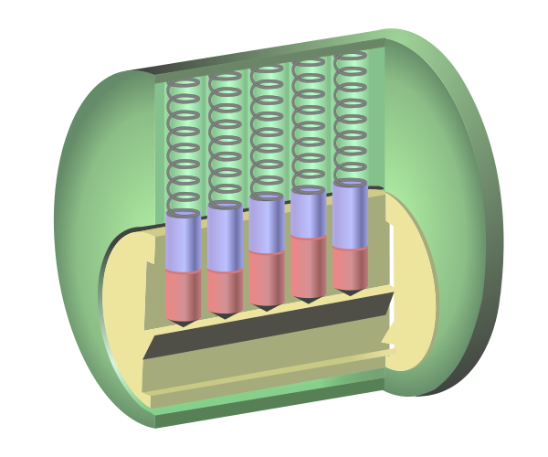
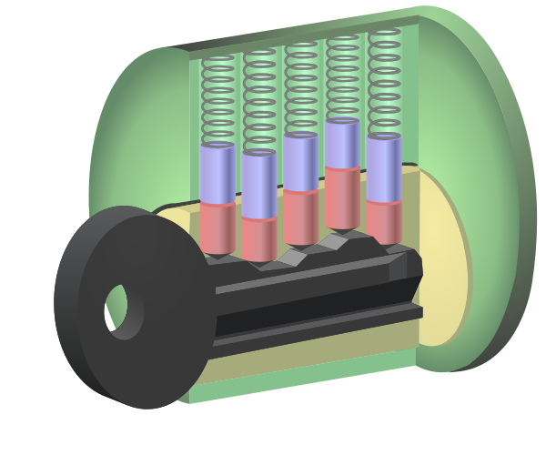
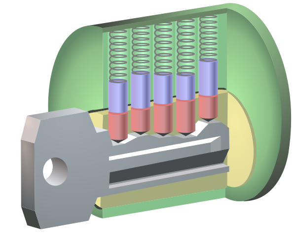
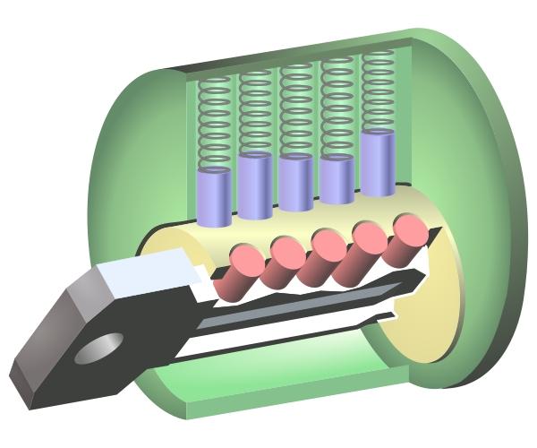

CS 3710
Introduction to Cybersecurity
Aaron Bloomfield (aaron@virginia.edu)
@github | ↑ | 
Security Mindset
Sources
Some of the content for this slide set was based on CS 487 from the University of Illinois at Chicago, which was based on ECE 422 / CS 461 from the University of Illinois, which is also released under a CC BY-SA license
Motivation
Security Fails
- You can find them many places online; Here is one
- You may want to open that in a private tab!
What is Security?
Security is freedom from, or resilience against, potential harm (or other unwanted coercive change) from external forces.
from Wikipedia
What are “external forces”?
- In our context, usually malware written by individuals
- But not always! Stealing a computer to obtain the information on it is a non-software based approach…
- To fight them, we have to understand them…
No security is 100% fool-proof
- Consider the 128 bit MD5 hash
- One can brute force it!
- There are \(2^{128}=3.4*10^{38}\) possible hashes
- So the chance of somebody guessing it is \(100-\frac{1}{2^{128}}\) = 99.999999….% (a total of 42 9’s)
- That seems secure until you use a fast computer to brute force it in an hour or so…
- (there are mathematical weaknesses in MD5 that allow one to crack it in a minute or less)
Consider (only) 1024 bit RSA
- There are approximately \(1.88*10^{302}\) possible primes to brute force
- And there are only an estimated \(10^{80}\) particles in the known universe
- Let’s assume that each particle could compute one prime each millisecond
- That would take you \(5.95*10^{211}\) years
- And the universe is only about \(13.75*10^{9}\) years old…
- Now 2048 bit is recommended, and 4096 is available
- Source
Example: “Unbreakable” RSA
Security
")
The key to good security…
… is knowing your enemy
If you know the enemy and know yourself,
you need not fear the result of a hundred battles.
If you know yourself but not the enemy,
for every victory gained you will also suffer a defeat.
If you know neither the enemy nor yourself,
you will succumb in every battle.
– Sun Tzu, Art of War, chapter 3
(Lionel Giles’ translation)
Know your enemy
- This is the threat model:
- … what are their motives?
- … what are their capabilities?
- … what is their degree of access?
Security Mindset Overview
The Security Mindset is…
- Learning to think like the attacker
- Including trying to understand how to attack a system
- Thinking critically about the system being examined
- Understanding both technical and non-technical countermeasures
- Trying to see how you can break something
- Or how something might break without you trying
The mindset…
- From Bruce Schneier’s blog:
Security professionals … can’t walk into a store without noticing how they might shoplift. They can’t use a computer without wondering about the security vulnerabilities. They can’t vote without trying to figure out how to vote twice.
Security Mindset vs Crime
- Thinking about the weaknesses of a system is different than acting on those weaknesses
- Thinking about how a lock can be picked allows one to build a better lock; this is not breaking and entering
- Thinking about how encryption can be exploited allows one to make more secure systems
Thinking Like an Attacker
- Look for weakest links, as they are the easiest to attack
- Identify assumptions that security depends on
- Are they false?
- Think outside the box, and don’t be constrained by the system designer’s worldview


Thinking Like a Defender
- There are four parts that we’ll go over
- Security policy
- Threat model
- Risk assessment
- Countermeasures
Security policy
- What are we trying to protect?
- What properties are we trying to enforce?
- Confidentiality
- Integrity
- Availability
- Privacy
- Authenticity
Threat model
- Who are the attackers?
- Motives?
- Capabilities?
- Access?
Risk assessment
- What would security breaches cost us?
- Direct costs: money, property, safety, …
- Indirect costs: reputation, future business, well being, …
- How likely are these costs?
- Probability of attacks?
- Probability of success?
Countermeasures
- Technical countermeasures
- What most of this course is about!
- Non-technical countermeasures
- Law, policy (government, institutional), procedures, training, auditing, incentives, etc.
Security Costs
- No security mechanism is free
- Direct costs: design, implementation, enforcement, false positives
- Indirect costs: lost productivity, added complexity
- Challenge is rationally weigh costs vs. risk
- Human psychology makes reasoning about high cost/low probability events hard
Case Study: Designing a software grading system
- Thinking like an attacker:
- What are the weakest links?
- Security assumptions?
- Thinking outside the box?
Case Study: Designing a software grading system
- Thinking like a defender:
- Security policy: what are we trying to protect? What properties are we trying to enforce?
- Threat model: who are the attackers? What are their motives, capabilities, and access?
- Risk assessment: what would a breach cost us, both in direct and indirect costs? How likely are these costs?
- Countermeasures: both technical and non-technical
Case Study: How to pick a lock
A pin tumbler lock
A pin tumbler lock
- The purple & red rods are
the metal pins- Purple are the driver pins,
red are the key pins
- Purple are the driver pins,
- The ‘breaks’ between them
must all align with the top
of the plug (yellow in the
diagram) to allow it to rotate
in the cylinder- This opens the lock
With a wrong key
 The pins are not aligned so the plug can’t rotate
With the right key
 Note that the ‘breaks’ between the pins are lined up
Unlocked lock
How to pick a lock
- First, get a set of lock picks ($15 for a decent pair on Amazon)
- Disclaimer: it is ILLEGAL to own a set of lockpicks in Virginia unless you are a certified locksmith
- And maybe some practice locks which run as low as $9 on Amazon
How to pick a lock
Pop Quiz
Now that you know how easy it is to pick a cylinder lock, how many people feel less comfortable using cylinder locks?
Locks are no longer secure!
- What are we ever going to do?
- Keep in mind that no security is full-proof
- Not even RSA
- Many lock companies provide higher quality locks for a higher price
- They are much harder to pick, but not impossible
How to break into this house?

Locks and security
- A lock doesn’t have to be full proof
- But it does have to be difficult enough that one will try another avenue
- Means of entry, another house, etc.
- But it does have to be difficult enough that one will try another avenue
- Security is determined by the weakest link
- Such as the window in the picture on the last slide
Should the “weaknesses” of security be published?
- Some think no; consider the case of Professor Matt Blaze at UPenn
- His research is security and cryptography
- He published an article that discussed safe cracking
- Safecracking for the computer scientist
- A frank discussion of the quality of safes and their weaknesses
- Some in the locksmith community tried to silence him; it didn’t get very far…
Case Study: Charlottesville’s 2017 Unite the Right rally
Introduction
- All the information herein is taken from the Heaphy report or Wikipedia’s article
- The Heaphy report was commissioned by the Charlottesville City Council after the rally
- Immediately after it was released, both the Chief of Police for Charlottesville and the Superintendent of the Virginia State Police (VSP) resigned
- Note that the police officers and the VSP troopers that were present did their jobs they were directed to do – it was the leadership that screwed up
Report results
The report found that the Charlottesville Police Department had failed to adequately prepare for its events, had a flawed plan of response, and was not properly trained. The report also criticized actions by the Charlottesville City Council, attorneys from the city and state, the University of Virginia and the Virginia State Police.
Police watched violence happen
From one (of many) sources: “State police and National Guardsmen watched passively for hours as self-proclaimed Nazis engaged in street battles with counter-protesters. ProPublica reporter A.C. Thompson was on the scene and reports that the authorities turned the streets of the city over to groups of militiamen armed with assault rifles.”
The image on the next slide shows this happening…

Streets were not properly closed
- Some streets that were supposed to be closed were not
- Or were closed with an insufficient barrier
- In particular, 4th Street NW where Heather Heyer was killed, was not properly closed
- Source: Heaphy report, pages 89-90
- The next slide shows the single sawhorse barrier meant to stop all traffic on 4th street NW

Insufficient group separation
- The white supremacists were directed to exit right past the counter protesters
- With a police wall between the two groups
- The police where thus in the middle, and were the unfortunate recipients of thrown objects and being spit upon
- An earlier plan didn’t have any separation between the groups! (next slide)
- Source: Heaphy report, pages 57-58

Other problems
- Police did not have riot gear on (or ready) when people started showing up
- The protesters (the white supremacists) were entrusted to enter the park where they were told to do so (they didn’t)
- An apparent lack of understanding how to plan for, control, and manage rioting demonstrators by the police leadership
- The list goes on and on…
Countermeasures
- Some where “non-technical”
- Lawsuits against the many armed militia groups resulted in legally binding agreements not to attend any more rallies in Charlottesville
- Lawsuits against the organizers, many of which are still ongoing as of 2019
- The proof that violence can happen at these allowed Charlottesville to legally deny a permit for an anniversary rally
Countermeasure Results
- The Unite the Right anniversary rally in 2018 in Washington, DC had 20-30 supporters and “thousands” of counter-demonstrators
- It was described as a “pathetic failure” and “embarrassing”
Apply the Security Mindset
- From Sun Tzu: understand your enemy (think like the attackers)
- They did not comprehend the violence that the neo-Nazis were intending to participate in
- Weapons were not banned!
- The thought was that neo-Nazis would follow the rules about where to enter the park
- They thought a simple sawhorse barrier would prevent traffic on 4th St SE
- They did not understand the riots that were going to take place
- They did not comprehend the violence that the neo-Nazis were intending to participate in
Apply the Security Mindset
- From Sun Tzu: understand yourself
- They did not have adequate equipment (riot gear)
- They did not understand their ability to move people in and out of the protest areas
- And how to keep the groups separated
- They did not understand (or admit) to their lack of knowledge to handle these events
- Federal agencies could have been called in to help